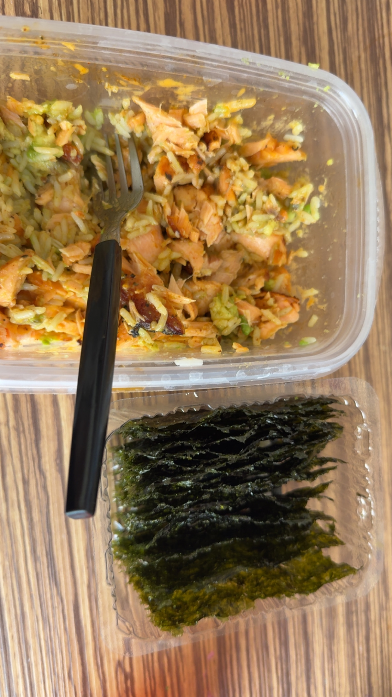

Salmon Dip and Roasted Seaweed

Ingredients
- 1 4oz salmon fillet
- 1 Avocado
- 1 cup of microwaveable rice
- Gyoza sauce (nonspecific amount)
- Spicy Mayo (nonspecific amount)
- Roasted Seaweed strips
Instructions
- Airfry 1 salmon fillet 10 minutes at 400F.
- Microwave cup of rice for 55 seconds.
- Mix avocado and rice in a bowl while salmon cooks.
- Add gyoza sauce and spicy mayo to your rice and avocado mix.
- Add cooked salmon to avocado and rice and mix.
- Use roasted seaweed as wrap to eat salmon dip and enjoy!
This makes one serving!